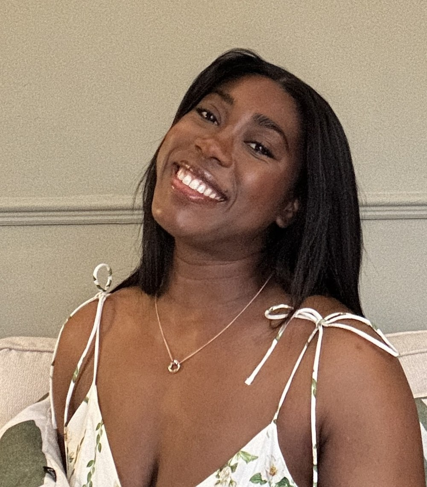
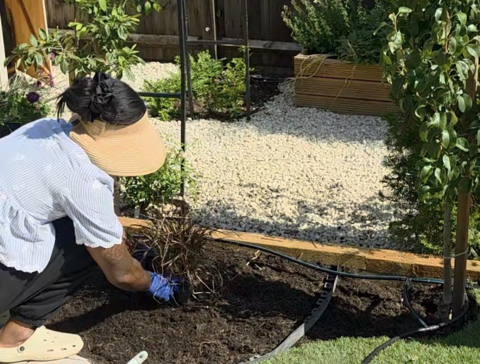

Gardens are where I am happiest.
I have always been happiest outside. When I am not working on a garden, I am usually in my own, with my hands in the soil. And when my hands are clean, you will find me looking out at it, either admiring the beauty of nature or, more likely, already thinking about the next project.
Plants are my real passion. I love learning about them: what grows well where, what thrives in shade or in full sun, what looks beautiful together, and what will still look good years from now. Knowing what works in which space is what turns a lovely idea into a garden that lasts.
What I love most is making outdoor spaces feel like rooms.
Places with their own atmosphere, where people feel comfortable and want to spend time. I want every garden I make to be a thing of beauty and to be practical too, because a garden that looks lovely but does not suit how you live will never get used.
That is why no two of my gardens are the same. Each one is shaped around the person it is for: how you use the space, how much maintenance you are happy to take on, and how you want to feel when you step outside.

Whatever your starting point
Some people arrive with a very clear picture. Others just know they want to enjoy their space more.
You know exactly what you want
Tell me your vision and I will help make it real, working out what is possible in your space and how to get every detail right.
You want a space that feels good
If you do not know where to start, that is completely fine. Most people do not. We will talk about how you live and what you love, and I will take it from there.
Whichever describes you, I am the person for your project.